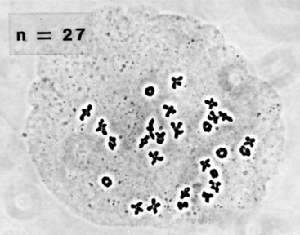
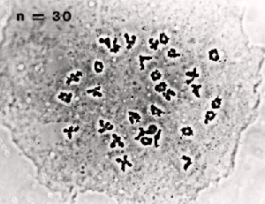

CHROMOSOME ANALYSIS
|
Comparing the DNA of
different organisms can show how closely related they are.
Since for each species the DNA
information is organized in a characteristic number of
chromosomes,
the number of chromosomes is a reasonable
indicator of the relatedness of two simliar species.
Sometimes the DNA information on a chromosome is reorganized. Chromosomes can sometimes fuse with each other or can exchange chromosome "arms". When this happens, DNA information is not always lost, but it can become mixed up. This sort of rearrangement may not cause problems for the individual who carries the change --- as long as all the DNA is still present. A mule is the product of two different species (a horse and a donkey) mating with each other. The fact that these two different types of animals can mate and produce viable offspring tells scientists that horses and donkeys are closely related. However, mules are always sterile. Why is this? Horses and donkeys have different chromosome numbers (see below). The fact that horses and donkeys have different chromosome numbers tells scientists that these two are different species. For the mule, having parents with different chromosome numbers isn't a problem. During mitotic cell division, each of the chromosomes copies itself and then distributes these two copies to the two daughter cells. In contrast, when the mule is producing sperm or egg cells during meiosis, each pair of chromosomes (one from Mom and one from Dad) need to pair up with each other. Since the mule doesn't have an even number of homologous pairs (his parents had different chromosome numbers), meiosis is disrupted and viable sperm and eggs are not formed. Using chromosomes to classify plant species

One Utah species originally assigned to Notholaena has 27 chromosomes. Variations in chromosome number are even more common in the plant kingdom. In plants, chromosome number is an important indicator for determining relationships between plant species. Scientists at the Utah Museum of Natural History recently used studies of chromosome number to show that a Utah fern was not the same species as a very similar fern found in other states. Studies of the Utah Jones Cloak Fern (originally thought to be a Notholaena species) showed that the cells of this plant have 27 chromosomes. Other species of Notholaena found in other states have 30 chromosomes. When combined with the results of other studies, the difference in chromosome number helped to prove that the Utah species actually belonged in the genus Argyrochosma, a very distant relative of Notholaena . This sort of information is important because it helps conservation biologists understand the distribution of each different species of plant. With this sort of information, scientists are better able to decide which plants are rare and require protection by means such as the endangered species list.

Species of Notholaena from other states have multiples of 30 chromosomes. This species has 30. |